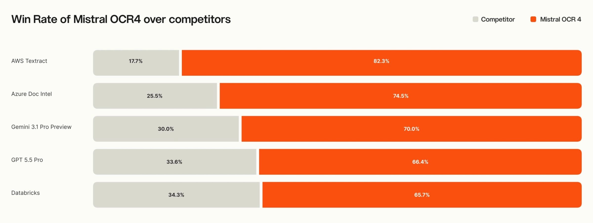
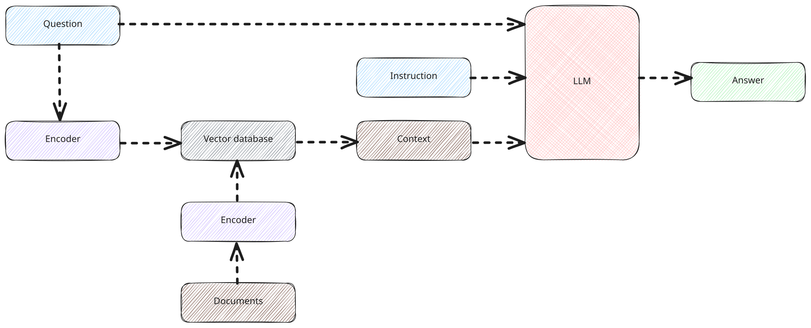

Executive Summary
On June 23, 2026, Mistral released OCR 4 for document intelligence. What the new model outputs is not just text. Every single word carries a confidence score, each character comes with coordinates showing where it sat on the page, and every block is classified as a heading, a table, a formula, and so on. Of those signals, the one that shakes a data pipeline the most is the word-level confidence score.
Traditional OCR told you only at the document or page level that the result was "probably trustworthy." OCR 4 scores every word. As a result, the extraction output doubles as a quality scorecard. A downstream pipeline can use a single threshold to auto-approve high-confidence text and route only low-confidence text to a human. In effect, the separate quality-validation step disappears. That said, the self-hosting price was not disclosed, and the API rate doubled compared to OCR 3.
Add position coordinates and block classification, and a RAG answer can be traced back to a single cell of a table in the source document, while single-container self-hosting keeps sensitive documents from ever leaving your infrastructure. Extraction, quality, provenance, sovereignty — four challenges once solved separately now interlock inside one product.
Per-word
confidence score
Confidence output for every word, not per page
170
supported languages
10 language families, including low-resource languages
85.20
#1 on OlmOCRBench
72% win rate across 600+ document evaluations
1 container
self-hosting
On-premise deployment with no cloud transfer
Unstructured Data Is the First Gate
Roughly 80% of the data an enterprise holds is unstructured. PDF contracts, scanned invoices, reports dense with tables, forms mixed with handwriting. To connect these documents to an LLM, there is one step you cannot skip: turning paper that people used to read into a structure a machine can handle. That is document extraction. The first gate on the road to AI-Ready Data sits right here.
The problem is that this first gate has long been the weakest. Traditional OCR simply spits out text; it never told you how much you could trust that text. Misread a blurry scanned "3" as an "8," and the output looks like a perfectly clean "8." Downstream, there is no way to know which characters are dangerous. In the end, someone had to re-check everything by hand, or give up on checking and carry the errors forward.
The "garbage in, garbage out" everyone cites in RAG starts not at the retrieval step but right here, at extraction. If you read the source document wrong, no amount of great embedding and retrieval stacked on top can push answer quality past the extraction error. The quality of the first gate is the ceiling for the entire pipeline.
From Text to Structure
Where OCR 4 parts ways with existing tools is not the accuracy number. It is the shape of the output. Feed in the same document and what comes back is different. Where traditional OCR hands you a run of characters, OCR 4 attaches three more things to those characters: position coordinates for each text element (a bounding box), a block-type classification (heading, table, formula, signature, paragraph), and confidence scores at both the page and word level. On output format, beyond Markdown and JSON, it supports pulling fields out according to a schema you define.
The raw performance does not lag either. It took the overall top spot on OlmOCRBench with 85.20 and posted 93.07 on OmniDocBench, and in an independent-evaluator preference comparison across more than 600 documents and over 12 languages it showed a 72% win rate. It supports 170 languages across 10 language families. The fact that performance does not collapse on low-resource languages the way it does for competing tools matters especially to organizations handling multilingual documents.

The crux is the move from "reading" to "understanding as structure." A job that used to pull out characters alone has become one that also outputs what the document looks like, what each piece is, and how trustworthy it is. That difference flows into data quality and RAG over the next two sections.
What the Confidence Score Changes
A word-level confidence score sounds small, but its consequences are large. It means extraction and quality measurement happen at the same step. The old pipeline turned a document into text via OCR, then placed a separate quality-validation step to decide whether that text was usable, and only after a human reviewed it did the text go into the database. OCR 4 compresses this flow. Since the extraction output already has per-word scores baked in, you can branch immediately on a single threshold.
The payoff is in where human review sits. The model of having a person skim "every document" shifts to one where only "documents that contain low-scoring words" reach a person. You can concentrate reviewers where the real risk is, and because the record shows which word became a review target and why, an audit trail follows naturally. In fields like finance, healthcare, and legal, where a single misread character can become a compliance violation, this split is not a cost but a safeguard.
The early adoption cases Mistral disclosed point the same way. One financial-services customer reported processing roughly four times faster per page than before. Another cut costs eightfold and reduced latency seventeenfold compared with the agentic document parser it had been using. That is the difference you get when you strip out the separate validation step and let structured output flow straight through the pipeline.
Seen through the lens of data quality, the change is even clearer. Until now, a quality score was a metric you assigned after the fact, with a separate tool, once extraction was done. In OCR 4 that score is inside the extraction output from the start. Quality stops being an inspection item outside the pipeline and becomes a property baked in at the moment the data is born.
Provenance and Sovereignty, Solved in One Step
Position coordinates and block classification pay off directly in RAG. With a bounding box, you can trace which page and which spot of the original the extracted text came from. Knowing the block type on top of that lets you separate body sentences from numbers inside a table and reflect that in retrieval. That is why provenance at the level of "this answer came from the second row of the table on page 3 of the contract" becomes possible. Mistral wires OCR 4 into its own Search Toolkit as the document-ingestion layer, drawing a single line from extraction through to retrieval.

The other axis is self-hosting. OCR 4 can be deployed on-premise as a single container. That is where it parts ways with AWS Textract and Google Document AI, which are cloud-only and force you to send documents outside. Mistral is a French company, so jurisdiction stays within the EU as well. The fact that sensitive documents never leave organizational infrastructure is a decisive condition for finance, healthcare, public-sector, and legal organizations operating under GDPR or Korea's Personal Information Protection Act.
Provenance and data sovereignty were usually solved separately. Provenance through RAG design, sovereignty through infrastructure policy. OCR 4 pulls both into the single step of extraction and handles them at once. It can pin an answer's basis down to one cell of a table while keeping that document from ever going out to the cloud.
What to Choose
OCR 4 is not the right answer for every situation. The choice depends on where an organization has already planted its feet and what it values most. If you are deeply tied into the AWS ecosystem, Textract is the natural fit; if you run your data around BigQuery, Google Document AI is. Document AI in particular still shows strength on poor-quality scans.
Where OCR 4 clearly pulls ahead is its own territory: organizations that handle multilingual documents, need self-hosting, and want to use word-level quality signals directly in the pipeline. On price, the standard API is $4 per 1,000 pages, batch is $2, and schema-based Document AI is $5. That it doubled from OCR 3's $2, and that self-hosting pricing is undisclosed and requires a sales inquiry, are variables to weigh before adoption.
In the end the criterion converges to one question. Do you see data quality as an add-on feature of the pipeline, or do you put it at the center of the design? For an organization that wants to bake quality signals into the output from the extraction step onward, the direction OCR 4 lays out means more than a simple OCR swap.
Editor's Note
Why Pebblous reads this release through the lens of data quality is straightforward. Connecting unstructured documents to AI has always stalled at the quality of extraction, and how to measure that quality and where to bring in a human has been the real-world hard problem. Word-level confidence entering the extraction output signals that quality measurement is moving from a separate pipeline step to a property of the data itself. The flow where extraction becomes quality assessment sits in exactly the same place as the problem Pebblous faces in its work on data-quality diagnosis.
References
Official Documentation
- 1.Mistral AI. (June 23, 2026). "Mistral OCR 4: SOTA OCR for Document Intelligence." Mistral AI.
Industry & Press
- 2.MarkTechPost. (June 23, 2026). "Mistral Releases OCR 4 for Structure-Aware Document Intelligence." MarkTechPost.
- 3.VentureBeat. (June 23, 2026). "Mistral launches OCR 4, turning document extraction into a full enterprise AI play." VentureBeat.
- 4.TechTimes. (June 24, 2026). "Mistral OCR 4 Ships Structure-Aware Document AI That Runs on Your Own Infrastructure." TechTimes.